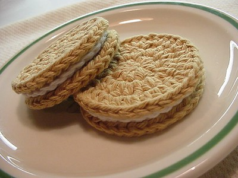
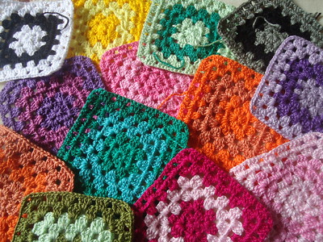
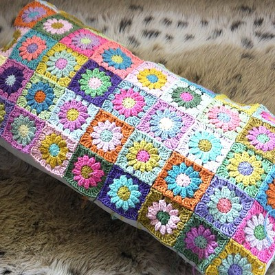

:: Yarn ::
Discover fun and creative yarn-related projects to satisfy all of your knitting and crocheting needs. Immerse yourself in the world of yarn crafting!
Projects

Crochet Daffodil
This project is a beautiful crochet daffodil. It's perfect for beginners and can be made in a variety of colors.

Crochet Hearts
These adorable crochet hearts are a great way to practice your stitches and make cute decorations or gifts.

Crochet Cookies
These crochet cookies are a fun and whimsical project that can be used as toys, decorations, or even coasters!

Crochet Granny Squares
Granny squares are a classic crochet project that can be combined to create blankets, scarves, and more. They're perfect for using up leftover yarn!

Crochet Daisy Pillow
This crochet daisy pillow is a charming addition to any room. It's a great project for intermediate crocheters looking to add some flair to their home decor.